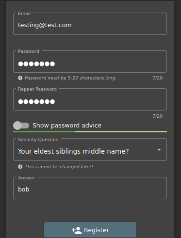

attack is theoretical since we are running on docker only
make a new account

passwrod :test123
login using rthat
burpsuite would directly test your full website for u in pro version

came here and it had file upload feature
it should only allow zip and pdf files na we try to upload xml files and it doesnt blacklist it

would intercept this request now


thus it is being uploaded
now clicked send if this were a real website directly we could ve seen the etc/passwrod file
eg of this is an ss below

u could submit it directly now
THESE dtd's are being allowed which shouldnt have been
SOLUTION:Disbale DTD's or external entities
so in such a scenario as an attacker u could go throiugh the remianing paylad list of github too
so here a finding is that thye allowed me to upload an xxe file